Total counts
John Blischak
2015-04-22
Last updated: 2016-04-24
Code version: 74f30e4e4b6c6fea3667336da91b01fb5603564f
During the processing pipeline, the number of reads in a file are counted and saved in a separate text files. The script gather-total-counts.py compiles all these counts and extracts the relevant variables from the filename.
Setup
library("dplyr")
library("ggplot2")
theme_set(theme_bw(base_size = 16))
theme_update(panel.grid.minor.x = element_blank(),
panel.grid.minor.y = element_blank(),
panel.grid.major.x = element_blank(),
panel.grid.major.y = element_blank())counts <- read.table("../data/total-counts.txt", header = TRUE, sep = "\t",
stringsAsFactors = TRUE)head(counts) stage sequences combined individual replicate well index lane
1 raw reads NA NA19098 r1 A01 ATTAGACG L002
2 raw reads NA NA19098 r1 A01 ATTAGACG L003
3 raw reads NA NA19098 r1 A01 ATTAGACG L006
4 raw reads NA NA19098 r1 A02 ACGAGTCT L002
5 raw reads NA NA19098 r1 A02 ACGAGTCT L003
6 raw reads NA NA19098 r1 A02 ACGAGTCT L006
flow_cell counts
1 C6WYKACXX 1986825
2 C6WURACXX 1785837
3 C723YACXX 1739622
4 C6WYKACXX 2019671
5 C6WURACXX 1809239
6 C723YACXX 1762255str(counts)'data.frame': 20232 obs. of 10 variables:
$ stage : Factor w/ 5 levels "mapped to exons",..: 4 4 4 4 4 4 4 4 4 4 ...
$ sequences : Factor w/ 2 levels "molecules","reads": 2 2 2 2 2 2 2 2 2 2 ...
$ combined : logi NA NA NA NA NA NA ...
$ individual: Factor w/ 3 levels "NA19098","NA19101",..: 1 1 1 1 1 1 1 1 1 1 ...
$ replicate : Factor w/ 3 levels "r1","r2","r3": 1 1 1 1 1 1 1 1 1 1 ...
$ well : Factor w/ 97 levels "A01","A02","A03",..: 1 1 1 2 2 2 3 3 3 4 ...
$ index : Factor w/ 96 levels "AAAGGTCC","AACCCATG",..: 23 23 23 13 13 13 85 85 85 68 ...
$ lane : Factor w/ 8 levels "L001","L002",..: 2 3 6 2 3 6 2 3 6 2 ...
$ flow_cell : Factor w/ 4 levels "C6WURACXX","C6WYKACXX",..: 2 1 3 2 1 3 2 1 3 2 ...
$ counts : int 1986825 1785837 1739622 2019671 1809239 1762255 1191181 1056347 989324 1601993 ...# Order the processing steps
counts$stage <- factor(counts$stage,
levels = c("raw", "valid UMI", "quality trimmed",
"mapped to genome", "mapped to exons"))
# Make new variable to separate bulk and single cell samples
counts$type <- ifelse(counts$well == "bulk", "bulk", "single")
counts$type <- factor(counts$type, levels = c("bulk", "single"))
# Scale to thousands and millions of counts
counts$counts_thousands <- counts$counts / 10^3
counts$counts_mil <- counts$counts / 10^6
summary(counts) stage sequences combined individual
raw :2664 molecules: 6912 Mode :logical NA19098:6744
valid UMI :2664 reads :13320 FALSE:7848 NA19101:6744
quality trimmed :2664 TRUE :1728 NA19239:6744
mapped to genome:6120 NA's :10656
mapped to exons :6120
replicate well index lane
r1:6744 bulk : 360 AAGTCTTC: 209 L002 :2688
r2:6744 A01 : 207 ACACAACT: 209 L003 :2688
r3:6744 A02 : 207 ACAGCGAA: 209 L004 :2688
A03 : 207 AGTCCACC: 209 L006 :2688
A04 : 207 CACGGTGT: 209 L001 :2106
A05 : 207 (Other) :17459 (Other):5646
(Other):18837 NA's : 1728 NA's :1728
flow_cell counts type counts_thousands
C6WURACXX:4794 Min. : 2495 bulk : 360 Min. : 2.495
C6WYKACXX:4794 1st Qu.: 84396 single:19872 1st Qu.: 84.396
C723YACXX:4794 Median : 822508 Median : 822.509
C72JMACXX:4122 Mean : 1002821 Mean : 1002.821
NA's :1728 3rd Qu.: 1578909 3rd Qu.: 1578.909
Max. :15126607 Max. :15126.607
counts_mil
Min. : 0.002495
1st Qu.: 0.084396
Median : 0.822508
Mean : 1.002821
3rd Qu.: 1.578909
Max. :15.126607
Read counts per lane
counts_per_lane <- counts %>% filter(!combined | is.na(combined),
sequences == "reads")
stopifnot(table(counts_per_lane$stage) == 2664)Plot the number of reads per lane at each processing stage faceted by bulk versus single cell sequencing.
ggplot(counts_per_lane,
aes(x = stage, y = counts_mil)) +
geom_boxplot() +
facet_wrap(~type) +
scale_y_continuous(breaks = seq(0, 16, 2)) +
labs(x = "Processing stage", y = "Number of reads (millions)",
title = "Total number of reads per lane at each stage") +
theme(axis.text.x = element_text(angle = 45, hjust = 0.9, vjust = 0.75))
Plot the number of raw reads per lane for each replicate of each individual faceted by bulk versus single cell sequencing.
ggplot(counts_per_lane[counts$stage == "raw", ],
aes(x = individual, y = counts_mil, fill = replicate)) +
geom_boxplot() +
facet_wrap(~type) +
scale_y_continuous(breaks = seq(0, 16, 2)) +
labs(x = "Individual", y = "Number of raw reads (millions)",
title = "Total number of raw reads per lane for each replicate") +
theme(axis.text.x = element_text(angle = 45, hjust = 0.9, vjust = 0.75))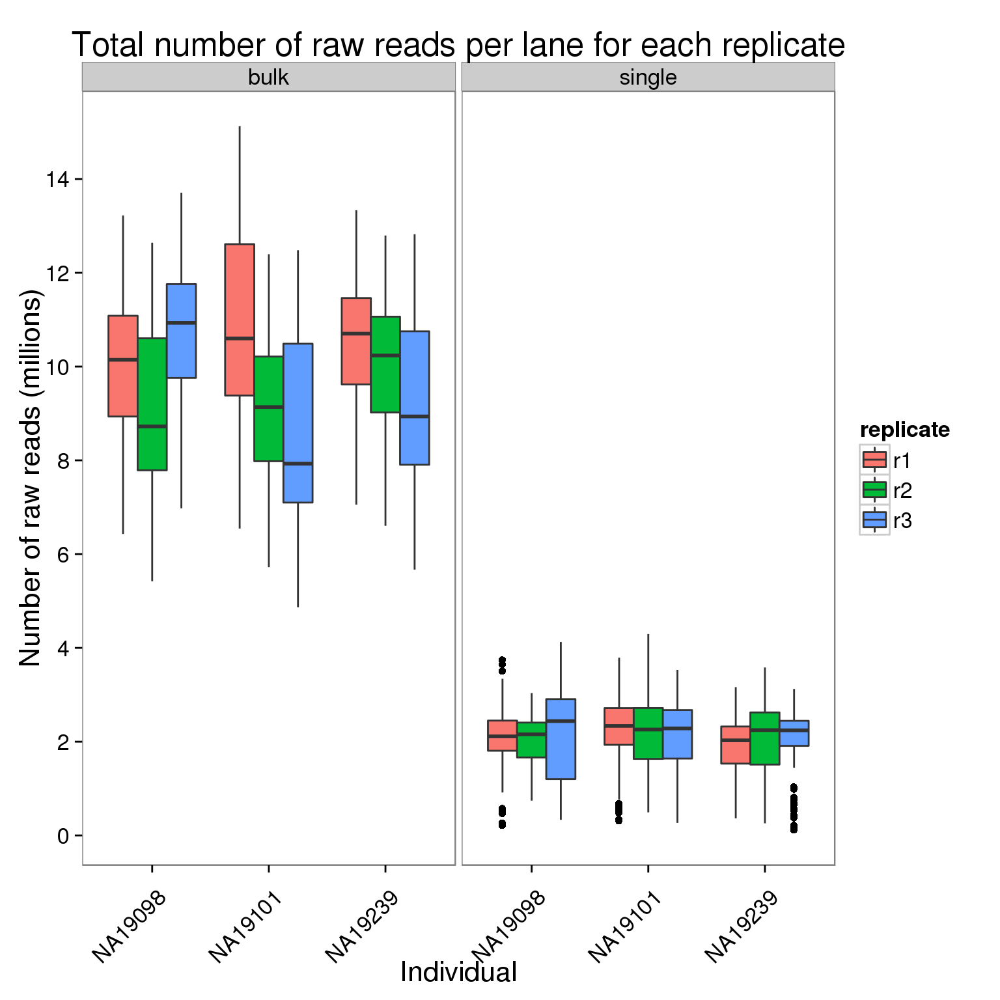
Plot the number of raw reads per lane for each lane of each flow cell faceted by bulk versus single cell sequencing.
ggplot(counts_per_lane[counts$stage == "raw", ],
aes(x = flow_cell, y = counts_mil, fill = lane)) +
geom_boxplot() +
facet_wrap(~type) +
scale_y_continuous(breaks = seq(0, 16, 2)) +
labs(x = "Flow cell", y = "Number of raw reads (millions)",
title = "Total number of raw reads per lane for each lane") +
theme(axis.text.x = element_text(angle = 45, hjust = 0.9, vjust = 0.75))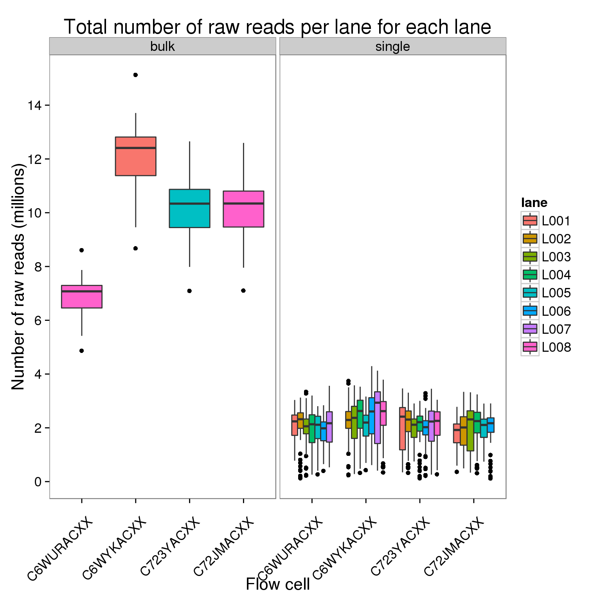
Plot the number of raw reads per lane for each index faceted by bulk versus single cell sequencing.
ggplot(counts_per_lane[counts$stage == "raw", ],
aes(x = index, y = counts_mil)) +
geom_boxplot() +
facet_wrap(~type) +
scale_y_continuous(breaks = seq(0, 16, 2)) +
labs(x = "Index", y = "Number of raw reads (millions)",
title = "Total number of raw reads per lane for each index") +
theme(axis.text.x = element_blank())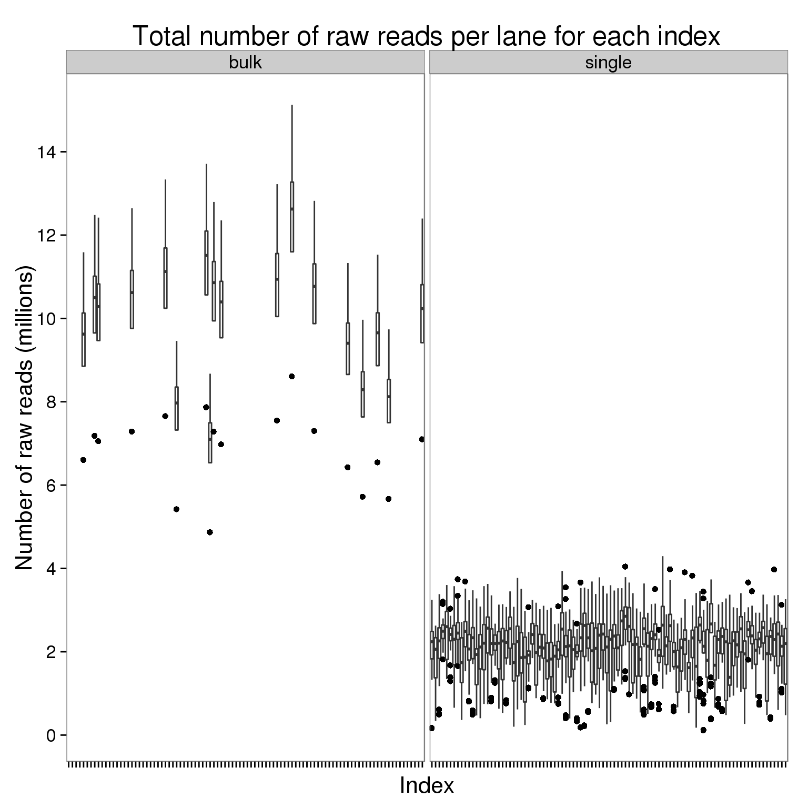
Read counts per sample
counts_per_sample <- counts_per_lane %>%
group_by(stage, individual, replicate, well, type) %>%
summarize(counts_mil = sum(counts) / 10^6)
stopifnot(table(counts_per_sample$stage) == 864 + 9)Plot the number of reads per sample at each processing stage faceted by bulk versus single cell sequencing.
ggplot(counts_per_sample,
aes(x = stage, y = counts_mil)) +
geom_boxplot() +
facet_wrap(~type) +
scale_y_continuous(breaks = seq(0, 100, 10)) +
labs(x = "Processing stage", y = "Number of reads (millions)",
title = "Total number of reads per sample at each stage") +
theme(axis.text.x = element_text(angle = 45, hjust = 0.9, vjust = 0.75))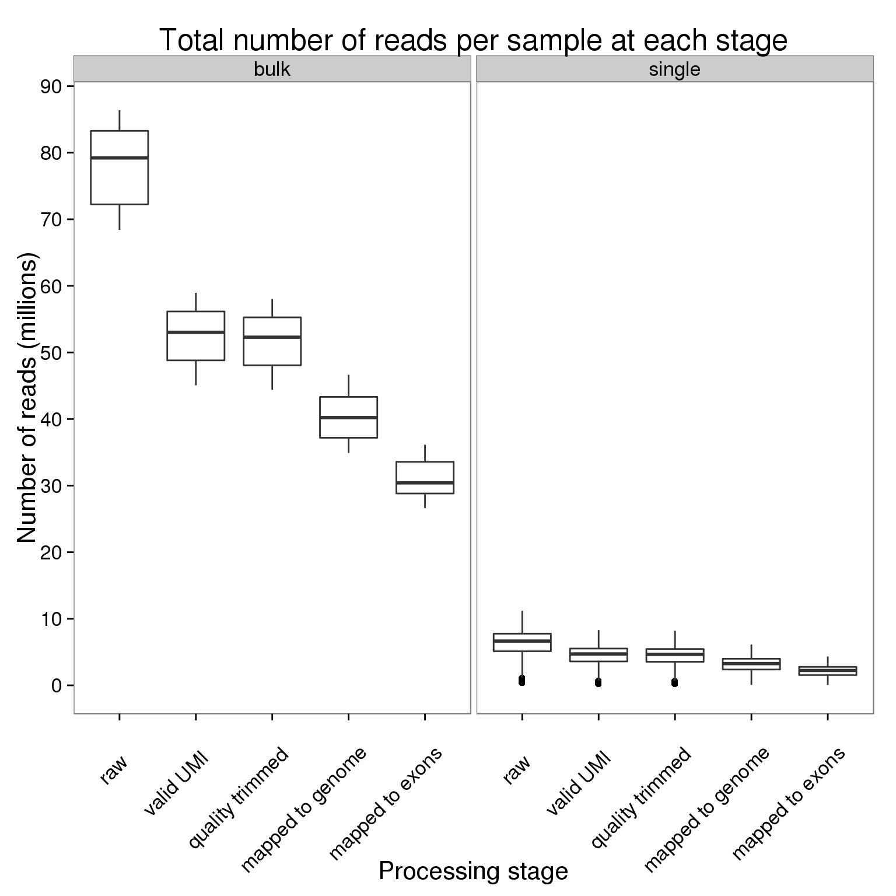
Plot the number of raw reads per sample for each replicate of each individual faceted by bulk versus single cell sequencing.
ggplot(counts_per_sample[counts$stage == "raw", ],
aes(x = individual, y = counts_mil, fill = replicate)) +
geom_boxplot() +
facet_wrap(~type) +
scale_y_continuous(breaks = seq(0, 100, 10)) +
labs(x = "Individual", y = "Number of raw reads (millions)",
title = "Total number of raw reads per sample for each replicate") +
theme(axis.text.x = element_text(angle = 45, hjust = 0.9, vjust = 0.75))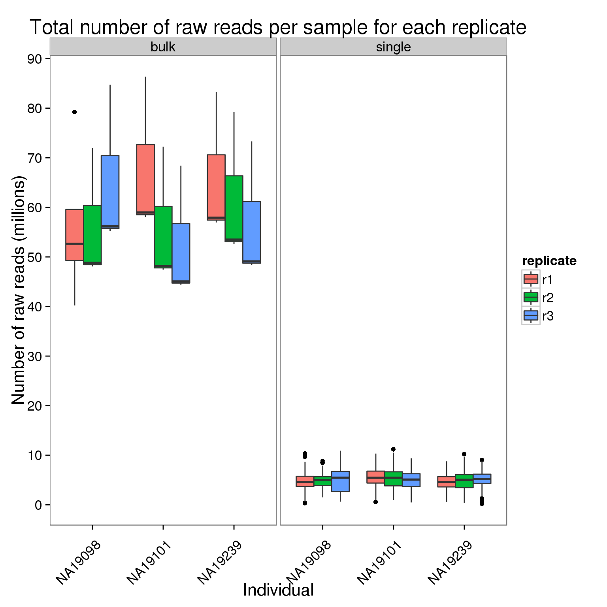
Molecule counts per lane
molecules_per_lane <- counts %>% filter(!combined | is.na(combined),
sequences == "molecules",
stage %in% c("mapped to genome",
"mapped to exons"))
molecules_per_lane <- droplevels(molecules_per_lane)
stopifnot(table(molecules_per_lane$stage) == 96 * 3 * 3 * 3)Plot the number of molecules per lane at each processing stage.
ggplot(molecules_per_lane,
aes(x = stage, y = counts_thousands)) +
geom_boxplot() +
scale_y_continuous(breaks = seq(0, 300, 50)) +
labs(x = "Processing stage", y = "Number of molecules (thousands)",
title = "Total number of molecules per lane at each stage") +
theme(axis.text.x = element_text(angle = 45, hjust = 0.9, vjust = 0.75))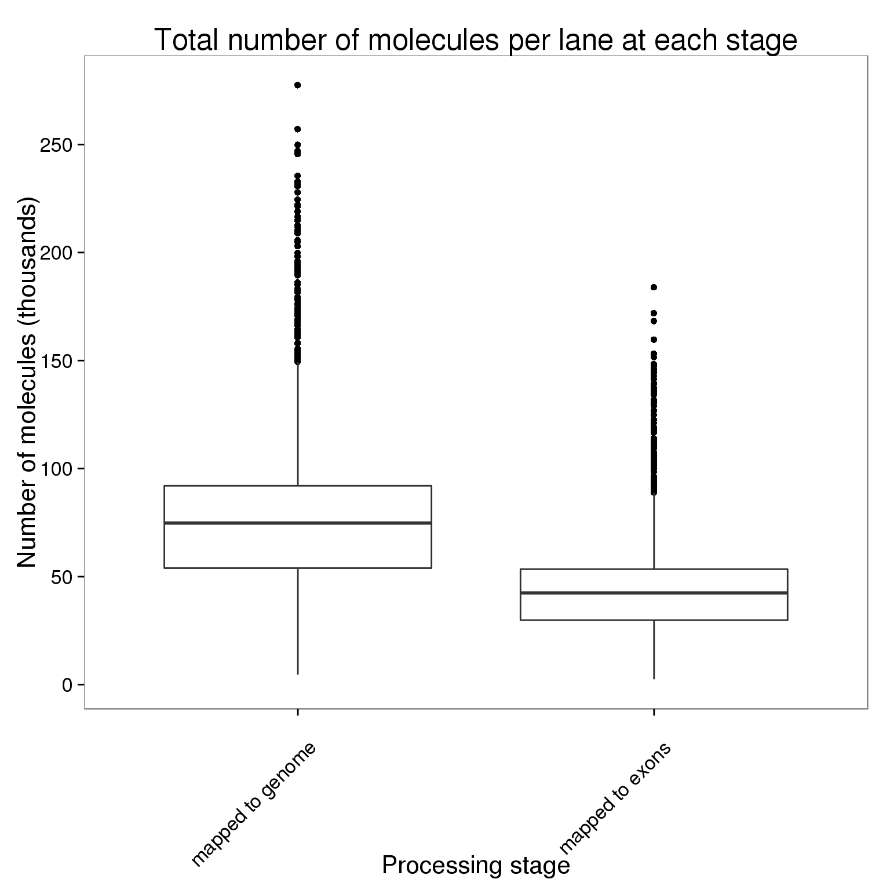
Plot the number of mapped molecules per lane for each replicate of each individual.
ggplot(molecules_per_lane[molecules_per_lane$stage == "mapped to genome", ],
aes(x = individual, y = counts_thousands, fill = replicate)) +
geom_boxplot() +
scale_y_continuous(breaks = seq(0, 300, 50)) +
labs(x = "Individual", y = "Number of mapped molecules (thousands)",
title = "Total number of mapped molecules per lane for each replicate") +
theme(axis.text.x = element_text(angle = 45, hjust = 0.9, vjust = 0.75))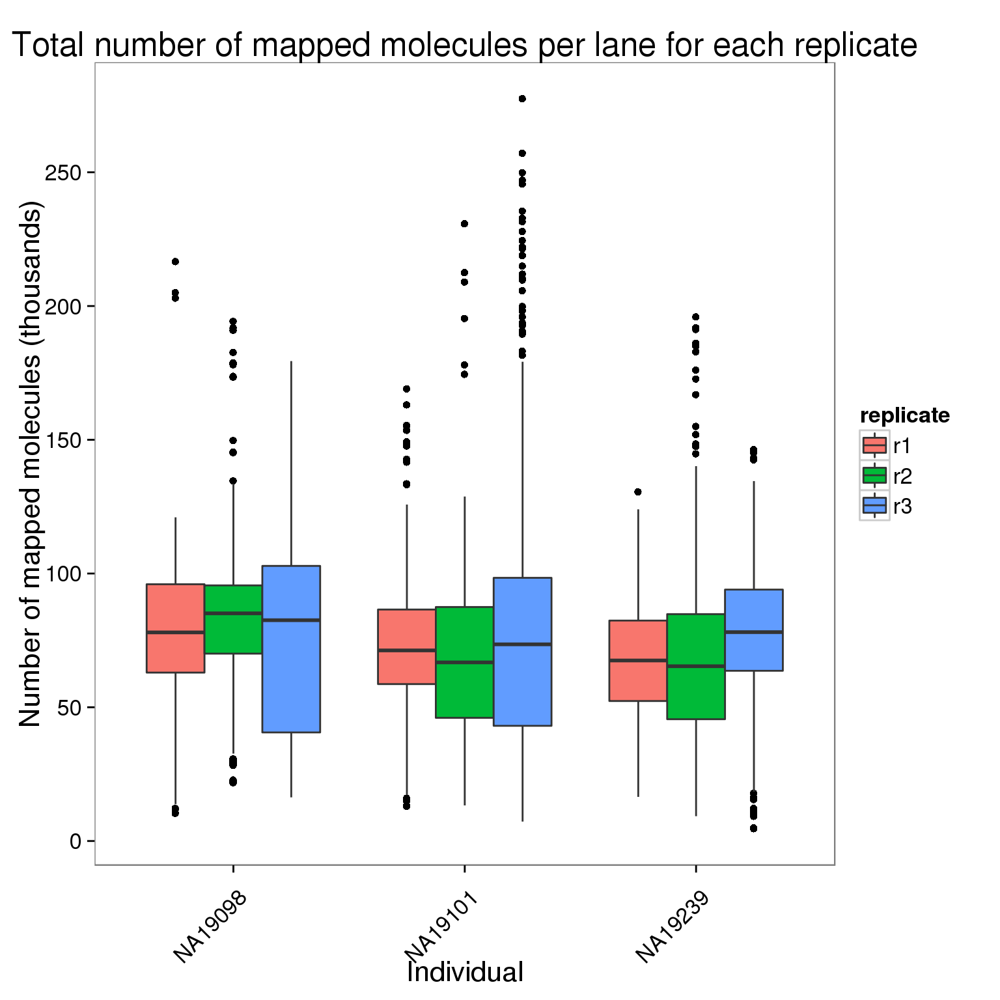
Plot the number of mapped molecules per lane for each lane of each flow cell faceted by bulk versus single cell sequencing.
ggplot(molecules_per_lane[molecules_per_lane$stage == "mapped to genome", ],
aes(x = flow_cell, y = counts_thousands, fill = lane)) +
geom_boxplot() +
scale_y_continuous(breaks = seq(0, 300, 50)) +
labs(x = "Flow cell", y = "Number of mapped molecules (thousands)",
title = "Total number of mapped molecules per lane for each lane") +
theme(axis.text.x = element_text(angle = 45, hjust = 0.9, vjust = 0.75))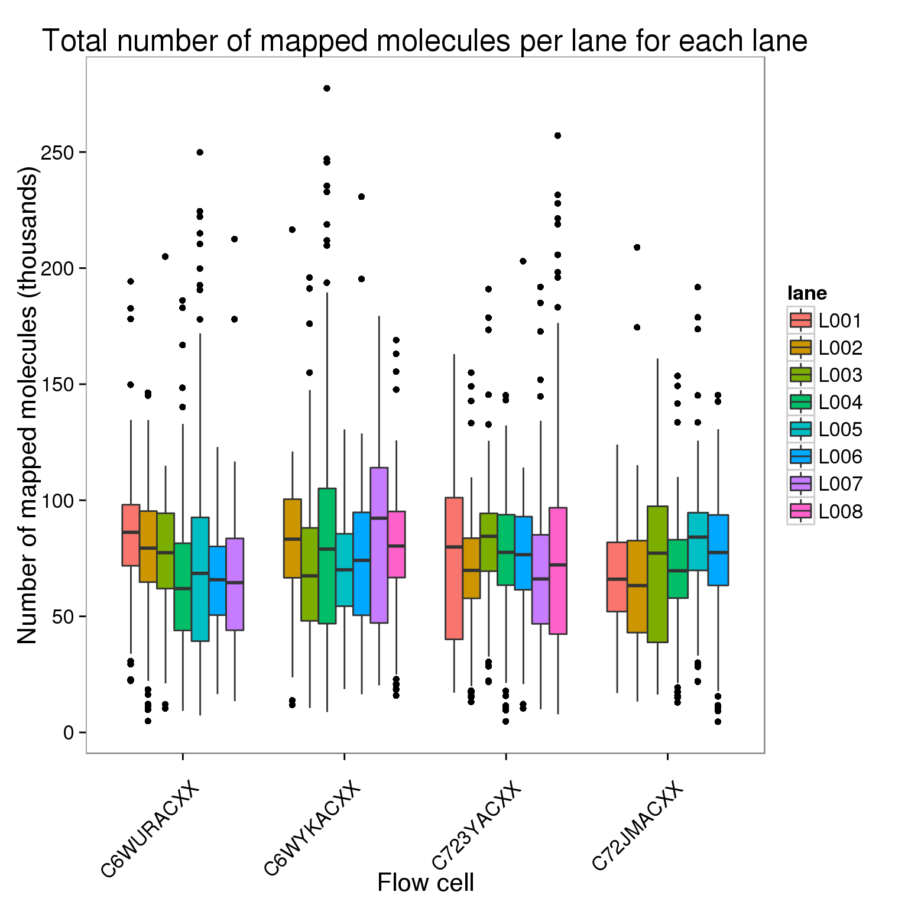
Plot the number of mapped molecules per lane for each index faceted by bulk versus single cell sequencing.
ggplot(molecules_per_lane[molecules_per_lane$stage == "mapped to genome", ],
aes(x = index, y = counts_thousands)) +
geom_boxplot() +
scale_y_continuous(breaks = seq(0, 500, 50)) +
labs(x = "Index", y = "Number of mapped molecules (thousands)",
title = "Total number of mapped molecules per lane for each index") +
theme(axis.text.x = element_blank())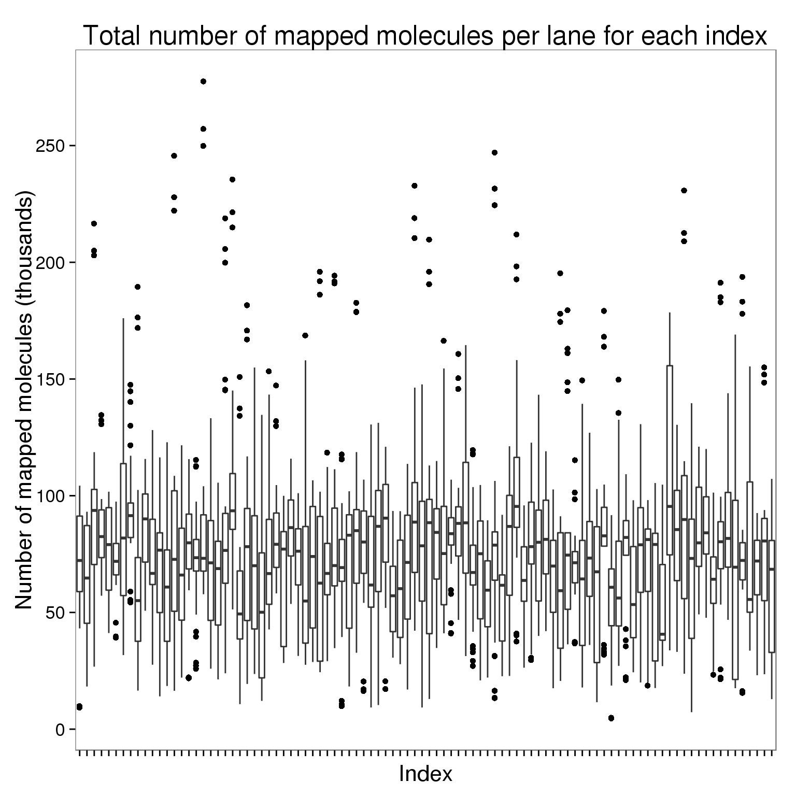
Molecule counts per sample
molecules_per_sample <- counts %>% filter(combined == TRUE,
stage %in% c("mapped to genome",
"mapped to exons"))
molecules_per_sample <- droplevels(molecules_per_sample)
stopifnot(molecules_per_sample$sequences == "molecules",
table(molecules_per_sample$stage) == 864)Plot the number of molecules per sample at each processing stage.
ggplot(molecules_per_sample,
aes(x = stage, y = counts_thousands)) +
geom_boxplot() +
scale_y_continuous(breaks = seq(0, 400, 50)) +
labs(x = "Processing stage", y = "Number of molecules (thousands)",
title = "Total number of molecules per sample at each stage") +
theme(axis.text.x = element_text(angle = 45, hjust = 0.9, vjust = 0.75))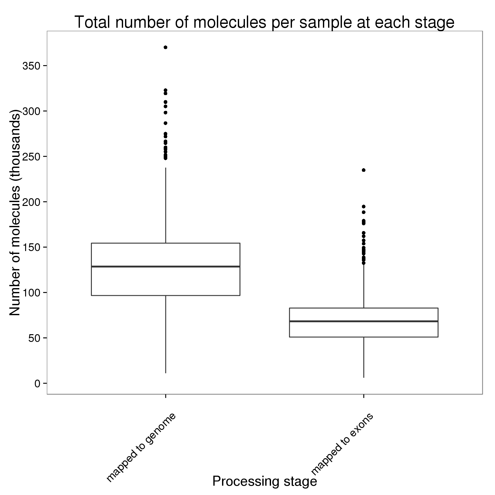
Plot the number of mapped molecules per sample for each replicate of each individual.
ggplot(molecules_per_sample[molecules_per_sample$stage == "mapped to genome", ],
aes(x = individual, y = counts_thousands, fill = replicate)) +
geom_boxplot() +
scale_y_continuous(breaks = seq(0, 400, 50)) +
labs(x = "Individual", y = "Number of mapped molecules (thousands)",
title = "Total number of mapped molecules per sample for each replicate") +
theme(axis.text.x = element_text(angle = 45, hjust = 0.9, vjust = 0.75))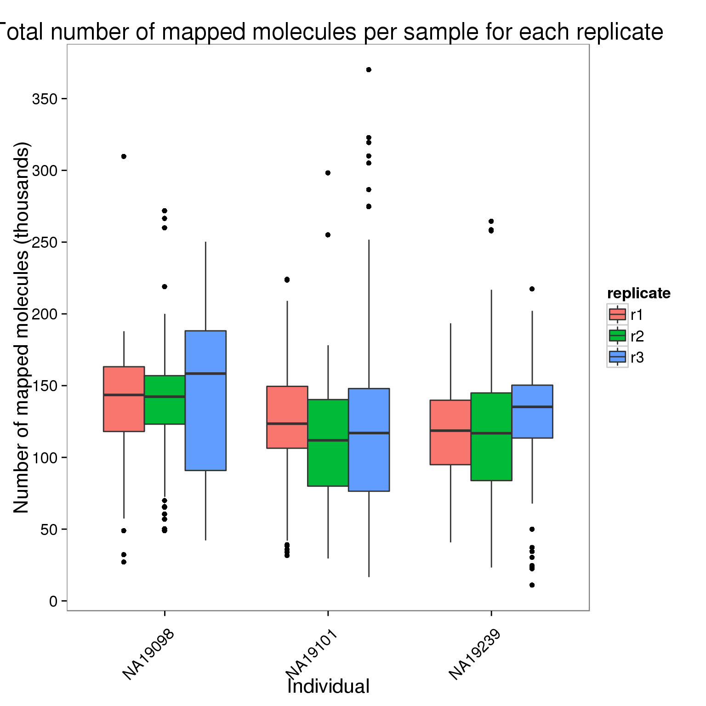
Summary for single cells
These summary statistics include low quality cells that are removed before downstream analyses.
depth_stats <- counts %>%
filter(stage == "raw", well != "bulk") %>%
group_by(individual, replicate, well) %>%
summarize(counts_per_sample = sum(counts)) %>%
ungroup() %>%
summarize(mean = mean(counts_per_sample), sd = sd(counts_per_sample),
min = min(counts_per_sample), max = max(counts_per_sample))We obtained an average of 6.28 +/- 2.11 million raw sequencing reads per sample (range 0.361-11.2 million reads).
exons_reads_stats <- counts %>%
filter(stage == "mapped to exons", well != "bulk", sequences == "reads") %>%
group_by(individual, replicate, well) %>%
summarize(counts_per_sample = sum(counts)) %>%
ungroup() %>%
summarize(mean = mean(counts_per_sample), sd = sd(counts_per_sample),
min = min(counts_per_sample), max = max(counts_per_sample))We obtained an average of 2.1 +/- 0.879 million sequencing reads per sample that mapped to protein-coding exons (range 0.0552-4.33 million reads).
exons_molecules_stats <- counts %>%
filter(stage == "mapped to exons", well != "bulk", sequences == "molecules",
combined) %>%
group_by(individual, replicate, well) %>%
summarize(counts_per_sample = sum(counts)) %>%
ungroup() %>%
summarize(mean = mean(counts_per_sample), sd = sd(counts_per_sample),
min = min(counts_per_sample), max = max(counts_per_sample))We obtained an average of 68.1 +/- 28.2 thousand molecules per sample that mapped to protein-coding exons (range 6.03-235 thousand molecules).
Session information
sessionInfo()R version 3.2.0 (2015-04-16)
Platform: x86_64-unknown-linux-gnu (64-bit)
locale:
[1] LC_CTYPE=en_US.UTF-8 LC_NUMERIC=C
[3] LC_TIME=en_US.UTF-8 LC_COLLATE=en_US.UTF-8
[5] LC_MONETARY=en_US.UTF-8 LC_MESSAGES=en_US.UTF-8
[7] LC_PAPER=en_US.UTF-8 LC_NAME=C
[9] LC_ADDRESS=C LC_TELEPHONE=C
[11] LC_MEASUREMENT=en_US.UTF-8 LC_IDENTIFICATION=C
attached base packages:
[1] stats graphics grDevices utils datasets methods base
other attached packages:
[1] ggplot2_1.0.1 dplyr_0.4.2 knitr_1.10.5
loaded via a namespace (and not attached):
[1] Rcpp_0.12.0 magrittr_1.5 MASS_7.3-40 munsell_0.4.2
[5] colorspace_1.2-6 R6_2.1.1 stringr_1.0.0 httr_0.6.1
[9] plyr_1.8.3 tools_3.2.0 parallel_3.2.0 grid_3.2.0
[13] gtable_0.1.2 DBI_0.3.1 htmltools_0.2.6 lazyeval_0.1.10
[17] yaml_2.1.13 assertthat_0.1 digest_0.6.8 reshape2_1.4.1
[21] formatR_1.2 bitops_1.0-6 RCurl_1.95-4.6 evaluate_0.7
[25] rmarkdown_0.6.1 stringi_0.4-1 scales_0.2.4 proto_0.3-10